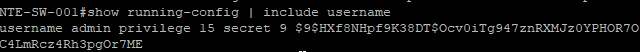
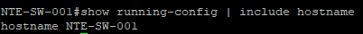
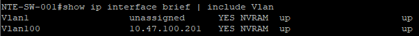
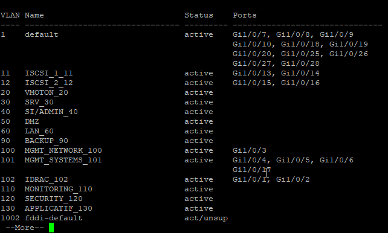
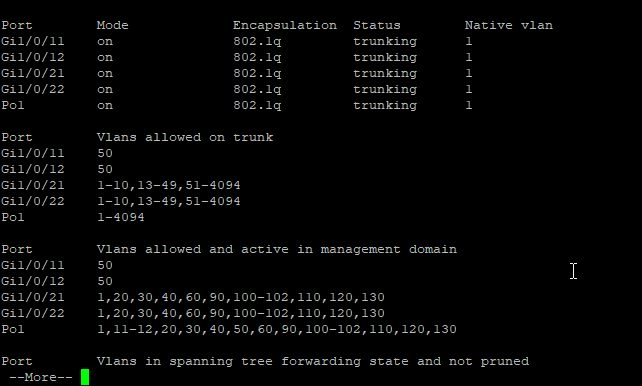
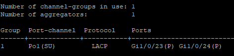
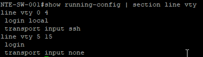
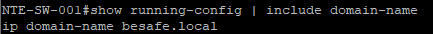
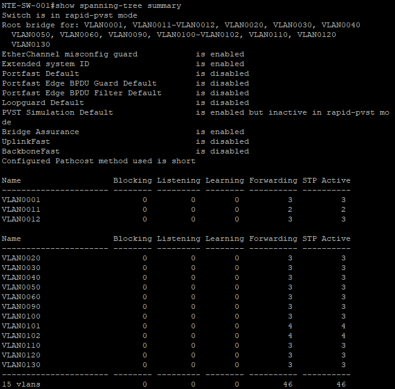

🔌 Configuration complète – Cisco Catalyst 1000 (BESAFE)
Cette page décrit la configuration du switch Cisco Catalyst 1000 NTE-SW-001 dans le cadre du projet BESAFE.
⚙️ Détails techniques
| Élément | Valeur |
|---|---|
| Modèle | Cisco Catalyst 1000 Series |
| Hostname | NTE-SW-001,NTE-SW-002 |
| Adresse de management | 10.47.100.201/24 (VLAN100) |
| Passerelle par défaut | 10.47.100.254 |
| Domaine | besafe.local |
| Accès admin | SSH v2 (line vty 0 4) |
🧾 Étape 1 : Installation / Informations générales
Objectif : définir les informations de base du switch (nom, utilisateur admin, IP de management)
👤 Création de l’utilisateur administrateur local
configure terminal
!
! Création de l’utilisateur local admin (privilège 15)
!
username admin privilege 15 secret <MOT_DE_PASSE_SECURISE>
!
end
write memory
- La forme secret permet de stocker le mot de passe sous forme chiffrée dans la configuration.
🔐 Utilise un mot de passe fort et stocké dans Vaultwarden.
📸 Capture 1 – User

🧾 Définition du nom de l’équipement
configure terminal
!
hostname NTE-SW-001
!
end
write memory
📸 Capture 2 – Hostname

🌐 Configuration de l’IP de management (VLAN 100)
Management via le VLAN MGT_Networks (VLAN 100), joignable depuis le réseau d’administration.
configure terminal
!
! Désactiver l’adresse sur VLAN 1 (non utilisé)
!
interface vlan 1
no ip address
shutdown
!
! Interface SVI de management – VLAN 100
!
interface vlan 100
description Management NTE-SW-001
ip address 10.47.100.201 255.255.255.0
no shutdown
!
! Passerelle par défaut pour le plan de management
!
ip default-gateway 10.47.100.254
!
end
write memory
📸 Capture 3 – VLAN Management

🌐 Étape 2 : Configuration L2 (VLANs, ports d’accès & trunks)
Objectif : créer les VLANs, puis attribuer les ports en mode access ou trunk selon le besoin.
🏷️ VLANs à créer (selon ton plan IP BESAFE)
| VLAN | Nom | Usage |
|---|---|---|
| 11 | ISCSI_1 | Stockage ESXi – iSCSI Path 1 |
| 12 | ISCSI_2 | Stockage ESXi – iSCSI Path 2 |
| 20 | VMOTION | vMotion |
| 30 | SRV | Serveurs (DNS, DHCP, PKI, etc.) |
| 40 | SI/ADMIN | Administration interne |
| 50 | DMZ | DMZ Services |
| 60 | LAN | Réseau utilisateurs |
| 90 | BACKUP | Veeam Backup |
| 100 | MGT_NETWORKS | Management (Switch/FW) |
| 101 | MGT_SYSTEMS | Management ESXi/VCSA |
| 102 | IDRAC | BMC / IDRAC |
| 110 | MONITORING | Zabbix / Grafana / Prometheus |
| 120 | SECURITY | Wazuh / IDS |
| 130 | APPLICATIF | GLPI / Nextcloud |
| 150 | VPN | VLAN VPN |
| 200 | MGT_FW | Accès firewall |
🛠️ Création rapide des VLANs
configure terminal
!
vlan 30
name SRV_30
vlan 40
name SI/ADMIN_40
vlan 50
name DMZ
vlan 60
name LAN_60
!
end
write memory
📸 Capture 4 – Affichage des VLANs existants

Vérifie la présence ou non des VLANs actuels avant insertion.
🔌 Attribution des ports en mode ACCESS
configure terminal
!
interface range gi1/0/1 - 2
description IDRAC
switchport mode access
switchport access vlan 102
!
interface range gi1/0/4 - 6
description MGMT Systems
switchport mode access
switchport access vlan 101
!
end
write memory
🔄 Ports TRUNK (ESXi / Firewall / Uplink)
interface range gi1/0/11 - 12
description Trunk DMZ
switchport mode trunk
switchport trunk allowed vlan 50
switchport nonegotiate
spanning-tree portfast edge trunk
spanning-tree bpduguard enable
interface gi1/0/21
description TRUNK <--> ESXi
switchport mode trunk
switchport trunk allowed vlan 1-10,13-49,51-4094
interface gi1/0/22
description TRUNK <--> Firewall
switchport mode trunk
switchport trunk allowed vlan 1-10,13-49,51-4094
📸 Capture 5 – Affichage des ports Trunks existants

Vérifie la présence ou non des VLANs dans les liens Trunks.
🔌 Étape 3 : LACP – Agrégation inter-switch (Port-Channel 1)
Objectif : configurer et vérifier l’agrégation de liens (LACP) entre NTE-SW-001 et NTE-SW-002
📸 Capture 6 – EtherChannel actif (exemple)

Le Port-Channel doit apparaître en SU (Layer2 – in Use).
🛠️ Configuration LACP – SW-001 (ports Gi1/0/23 & Gi1/0/24)
configure terminal
!
interface range gi1/0/23 - 24
description Uplink-to-other-switch (LACP)
switchport mode trunk
switchport trunk allowed vlan all
channel-group 1 mode active
lacp rate fast
spanning-tree link-type point-to-point
spanning-tree guard loop
!
interface port-channel 1
description LACP trunk between SW-001 and SW-002
switchport mode trunk
switchport trunk allowed vlan all
end
write memory
A reproduire sur le Switch 2
✔️ Points clés de la configuration
| Élément | Valeur | Pourquoi |
|---|---|---|
| mode active | LACP | Négociation dynamique, évite les erreurs |
| trunk allowed vlan all | Tous VLANs transitent | Simplifie le design inter-switch |
| lacp rate fast | Fast Heartbeat | Détection plus rapide des liens down |
| port-channel 1 | Po1 commun | Identification unique entre les 2 switches |
| spanning-tree link-type point-to-point | STP optimisé | Convergence rapide |
| guard loop | Protection L2 | Évite les boucles accidentelles |
🛠️ Étape 4 : Configuration avancée (SSH, HTTPS, domaine, bannière)
Objectif : sécuriser l’accès au switch, activer les services nécessaires (SSH/HTTPS), définir le domaine, et ajouter une bannière légale d’accès.
🔐 4.1 Activation et sécurisation de SSH
📸 Capture 7 – Interface SSH activée

configure terminal
!
ip ssh version 2
ip ssh time-out 60
ip ssh authentication-retries 3
!
line vty 0 4
login local
transport input ssh
!
line vty 5 15
login
transport input none
end
write memory
✔️ SSH v2 uniquement ✔️ VTY 0-4 acceptent SSH ✔️ VTY 5-15 désactivés pour renforcement sécurité ✔️ Accès via utilisateur admin local
🌍 4.3 Définition du nom de domaine
Le domaine est essentiel pour SSH, les certificats et l'intégration générale.
configure terminal
ip domain-name besafe.local
end
write memory
📸 Capture 8 – Domain name

🧾 4.4 Bannière légale d’accès
configure terminal
banner login ^
########################################################################
# ATTENTION : ACCÈS RÉSERVÉ AUX PERSONNELS AUTORISÉS BESAFE #
# #
# Toute tentative d'accès non autorisée est strictement interdite. #
# Les actions sont journalisées et peuvent donner lieu à poursuites. #
########################################################################
^
end
write memory
🛡️ Étape 5 : Sécurité L2 (Portfast, BPDU Guard, Loop Guard, STP)
Objectif : appliquer les bonnes pratiques Cisco pour sécuriser la couche 2 du switch et prévenir les boucles réseau, attaques STP et erreurs humaines.
🌳 5.1 Configuration globale du Spanning-Tree
configure terminal
!
spanning-tree mode rapid-pvst
spanning-tree extend system-id
!
end
write memory
⚡ 5.2 PortFast (activation instantanée)
S’applique uniquement aux ports access (IDRAC, NAS, serveurs, etc.).
configure terminal
!
interface range gi1/0/1 - 6 , gi1/0/13 - 17
spanning-tree portfast
spanning-tree bpduguard enable
!
end
write memory
🛡️ 5.3 BPDU Guard (protection STP)
Déjà vu ci-dessus, mais version globale possible :
configure terminal
spanning-tree portfast default
spanning-tree bpduguard default
end
write memory
🔒 Si un BPDU est reçu sur un port access → port mis en err-disable
🔁 5.4 Loop Guard (sur les trunks et LACP)
configure terminal
!
interface port-channel 1
spanning-tree guard loop
!
interface range gi1/0/23 - 24
spanning-tree guard loop
!
end
write memory
🔌 5.5 PortFast Edge Trunk (pour DMZ / ESXi / Firewall)
Activé UNIQUEMENT si tu es certain que l’équipement en face n’envoie pas de BPDU.
configure terminal
!
interface gi1/0/11
spanning-tree portfast edge trunk
spanning-tree bpduguard enable
!
interface gi1/0/12
spanning-tree portfast edge trunk
spanning-tree bpduguard enable
!
end
write memory
📸 Capture 9 – STP

✅ Résumé des étapes
| Étape | Objectif | Résultat attendu |
|---|---|---|
| 1️⃣ Installation | Informations générales | User, Hostname, Adresse de Management |
| 2️⃣ Configuration L2 | VLANs / Ports d'accès / Trunks | Attribution des VLANs par port |
| 3️⃣ LACP | Lien d'aggrégation inter-switch | Mécanisme LACP actif |
| 4️⃣ Configuration avancée | Management & accès sécurisé | SSH, HTTPS, Domain-name, Login Banner |
| 5️⃣ Sécurité L2 | Hardening Switch | Portfast, BPDU Guard, Loop Guard, STP rapid-pvst |